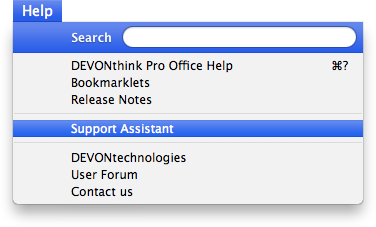

|
|
|
The Help menu |
|
The Help menu contains commands for opening the integrated help pages, the support assistant, or visiting the DEVONtechnologies website.  DEVONthink Pro Office Help These commands open the integrated help pages that are equal to the document you're reading or open the release notes. In addition, they direct you to the bookmarklets installation page Tutorials, Support Assistant Support Assistant: Opens the support screen of the Welcome to DEVONthink Pro Office assistant where you can get support, retrieve your license code, request a trial extension, or update your details in DEVONtechnologies' customer database. You can also install additional scripts or templates from the assistant.
Tutorials: Opens the Tips and Tutorials screen of the Welcome to DEVONthink Pro Office assistant. The tutorials help get you started by explaining everyday DEVONthink Pro Office tasks in step-by-step detail. This function requires an Internet connection. DEVONtechnologies These commands take you directly to the corresponding pages on the DEVONtechnologies web site. Visit our home page or the lively user forum. If you have a question or suggestion, send feedback directly to our development team. Hold the ⌥Option key to show the alternative menu item Report Bug. It creates a new message in yourdefault email client or Apple Mail containing the Console log and all related crash logs in a Zip archive, ready to be sent to DEVONtechnologies' customer support. |